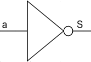
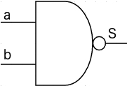
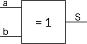

On rencontre des booléens quotidiennement : un interrupteur (ouvert / fermé), un jeter de pièce de monnaie (pile / face), ...
Un booléen est un type de variable à deux états, muni des opérations ET, OU, NON.
Ce sujet est à la confluence de 3 domaines : électronique, logique et informatique. D'où des notations diverses pour cette notion.
| Représentation | ||||||
|---|---|---|---|---|---|---|
| Français | Électronique | Logique | Ensembliste | Python | ||
| Etat | Etat Haut | Vrai | ⊤ | 1 | 1 | True |
| Etat Bas | Faux | ⊥ | 0 | 0 | False | |
| Opérations | NON | NON |  | $¬a$ | $\overline{a}$ | not |
| ET | ET | $a \,. b$ | $a ∧ b$ | and | ||
| OU | OU | $a + b$ | $a ∨ b$ | or | ||
On représente l'ensemble valeurs d'entrées et sorties par une table de vérité. A chaque variable d'entrée correspond une colonne, et chaque ligne, une valeur d'état possible. Une colonne de sortie contient la valeur de l'état de l'opération.
| Représentation | ||
|---|---|---|
| Américain | Européen | Signe mathématique |
| $¬a$ | ||
| Entrée | Sortie |
|---|---|
| a | $S = ¬a$ |
| 0 | 1 |
| 1 | 0 |
| Entrée | Sortie | |
|---|---|---|
| a | b | $S = a ∧ b$ |
| 0 | 0 | 0 |
| 0 | 1 | 0 |
| 1 | 0 | 0 |
| 1 | 1 | 1 |
| Entrée | Sortie | |
|---|---|---|
| a | b | $S = a ∨ b$ |
| 0 | 0 | 0 |
| 0 | 1 | 1 |
| 1 | 0 | 1 |
| 1 | 1 | 1 |
A partir de ces 3 opérateurs, il est possible d'en décrire d'autres.
Ecrire les tables de vérité des opérateurs suivants :
| Opérateur | Représentation | ||
|---|---|---|---|
| International | Français | Signe mathématique | |
| NON ET (NAND) |  | $¬(a ∧b)$ | |
| NON OU (NOR) | $¬(a∨b)$ | ||
| OU EXCLUSIF* (XOR) |  | $a \oplus b$ | |
| NON OU EXCLUSIF* (XNOR) | $¬(a \oplus b)$ | ||
*OU EXCLUSIF (XOR) : vaut 1 si uniquement une des deux valeurs de a ou de b vaut 1
Les opérateurs suivent plusieurs propriétés communes :
A l’aide de l'ensemble des opérateurs vus ci-dessus, on peut construire des expressions ou fonctions, que l'on évalue en établissant sa table de vérité.
Exemple : $S(a, b) = \mbox{ NOT }(a \mbox{ AND }b)$
| Entrée | Sortie | ||
|---|---|---|---|
| a | b | $S_1 = a \mbox{ AND } b$ | $S = \mbox{ NOT }(S_1)$ |
| 0 | 0 | 0 | 1 |
| 0 | 1 | 0 | 1 |
| 1 | 0 | 0 | 1 |
| 1 | 1 | 1 | 0 |
Ecrire les tables de vérité des expressions booléennes suivantes :
Trouver l'expression booléenne, notée ssi(a, b) à partir de sa table de vérité :
| Entrée | Sortie | |
|---|---|---|
| a | b | ssi(a, b) |
| 0 | 0 | 1 |
| 0 | 1 | 0 |
| 1 | 0 | 0 |
| 1 | 1 | 1 |